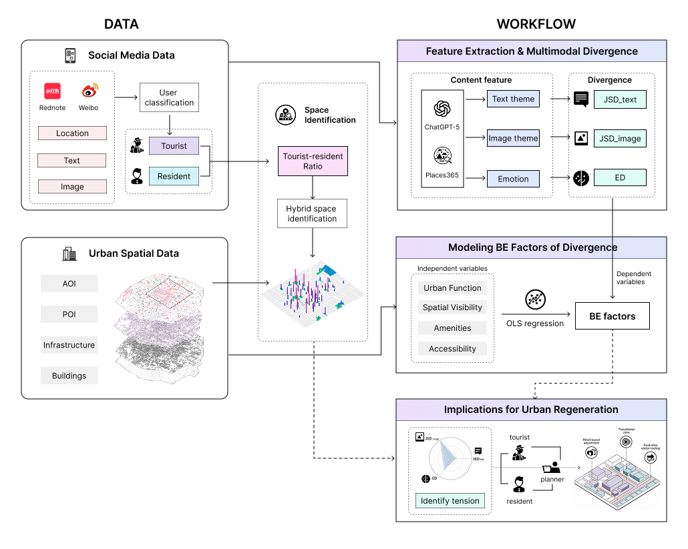
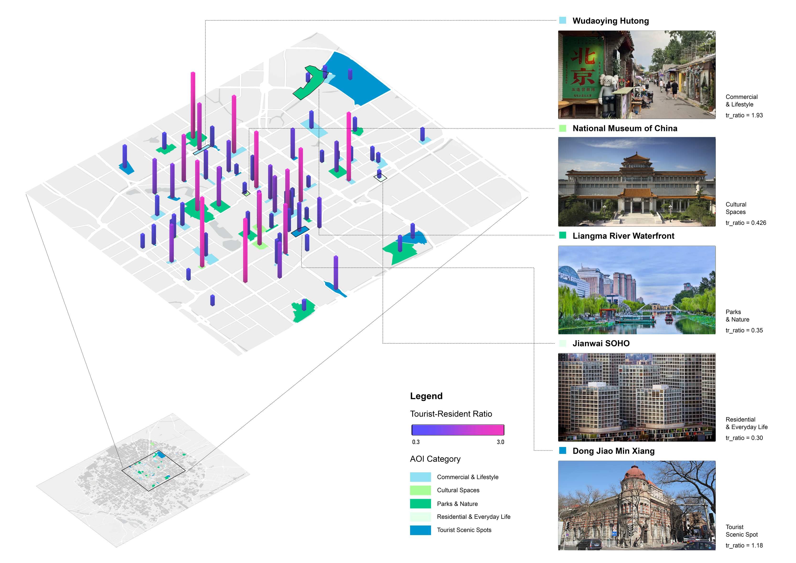
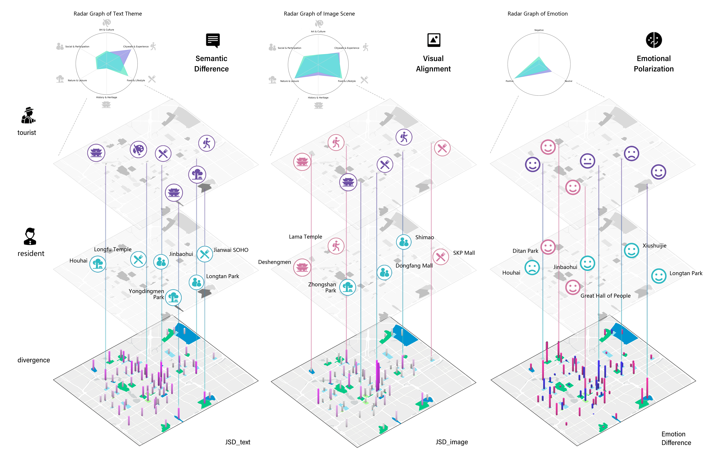

Urban Perception: Tourist vs Resident
Multimodal Social Sensing in Beijing
Read the published article ↗Transactions in Urban Data, Science, and Technology
Framework
We compared tourist and resident perceptions through 14,300 geotagged posts and 78,632 images from Beijing. The framework identifies shared urban spaces, measures differences in text, imagery, and emotion, and examines their associations with the built environment.

Mapping Tourist–Resident Presence
Posts were classified using a fine-tuned BERT model and spatially joined to areas of interest (AOIs) in ArcGIS Pro. After excluding AOIs with fewer than 50 posts and trimming extreme ratios, we identified 79 hybrid AOIs with tourist-to-resident post ratios of 0.3–3.0. Bar height and color show this ratio; polygon colors distinguish five urban space categories.

Image & Text Semantic Differences
GPT-5 extracted text themes, while Places365 classified image scenes into six aligned categories. Jensen–Shannon divergence measures tourist–resident differences within each modality: text diverged more (0.435) than images (0.140). The layered diagram connects group themes, emotions, and place-level differences. Image categories describe physical scenes, so their overlap does not imply identical experiences.
